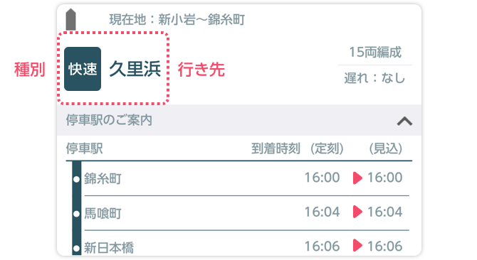

画面の見方
この路線のご注意
1-1. 列車アイコンの表現について
列車アイコンの色は路線色と同一となります。
1-2. 遅れの表現について
列車の横の数字は、分単位の遅れを表しています。遅れ時間が 100 分以上になる場合には「大幅遅れ」と表示されます。
1-3. 同一区間に在線する列車の表示
同一区間に複数の列車が在線している場合、列車アイコンの横に「・・・」と表示されます。
1-4. 列車詳細情報について
列車アイコンをタップすると、列車詳細情報を表示します。ただし、「詳細」アイコンが表示されていない場合には、列車詳細情報はご確認いただけません。
1-5. 行先などの変更について
行先や種別などについては、実際のものと異なる場合があります。

1-6. どこトレについて
「どこトレ」ボタンをタップすると、どこトレを表示します。「どこトレ」ボタンが無い路線もあります。
1-7. 千葉エリアについて
「千葉エリア」ボタンをタップすると、NETRAINS+ をスマートフォンのブラウザで表示します。「千葉エリア」ボタンが無い路線もあります。
1-1. 横浜線の注意事項
横浜線の列車は、東神奈川〜大船間のみ表示します。